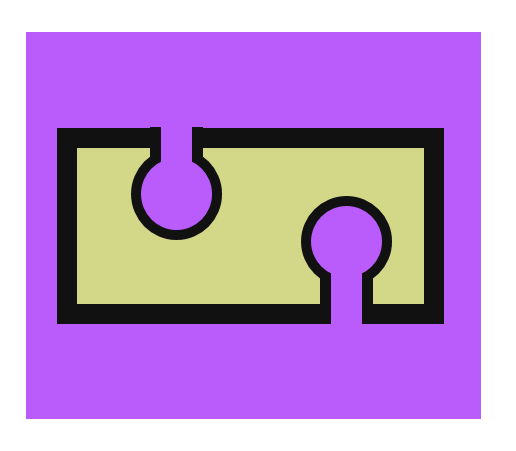
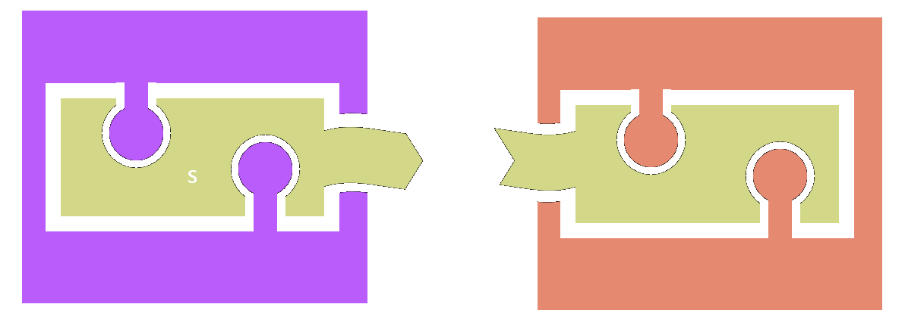

Full name: index.collectSnips
val seq : sequence:seq<'T> -> seq<'T>
Full name: Microsoft.FSharp.Core.Operators.seq
--------------------
type seq<'T> = System.Collections.Generic.IEnumerable<'T>
Full name: Microsoft.FSharp.Collections.seq<_>
Full name: index.codes
from Microsoft.FSharp.Collections
Full name: Microsoft.FSharp.Collections.Seq.collect
Full name: index.replaceSnips
type LiteralAttribute =
inherit Attribute
new : unit -> LiteralAttribute
Full name: Microsoft.FSharp.Core.LiteralAttribute
--------------------
new : unit -> LiteralAttribute
module List
from Microsoft.FSharp.Collections
--------------------
type List<'T> =
| ( [] )
| ( :: ) of Head: 'T * Tail: 'T list
interface IEnumerable
interface IEnumerable<'T>
member Head : 'T
member IsEmpty : bool
member Item : index:int -> 'T with get
member Length : int
member Tail : 'T list
static member Cons : head:'T * tail:'T list -> 'T list
static member Empty : 'T list
Full name: Microsoft.FSharp.Collections.List<_>
Full name: Microsoft.FSharp.Collections.List.map
Full name: index.newPars
interface
abstract member OnFormatDoc : 'a0 -> 'a1
abstract member OnFormatSnippet : 'a0 -> 'a1
abstract member OnParseDoc : 'a0 -> 'a1
abstract member OnParseSnippet : 'a0 -> 'a1
end
Full name: index.IDocProcessor
Full name: index.IDocProcessor.OnParseDoc
Full name: index.IDocProcessor.OnFormatDoc
Full name: index.IDocProcessor.OnParseSnippet
Full name: index.IDocProcessor.OnFormatSnippet
type MultiLangHandler =
inherit obj
new : unit -> MultiLangHandler
override OnFormatSnippet : snip:'a -> 'b
override OnParseSnippet : snip:'a -> 'b
Full name: index.MultiLangHandler
--------------------
new : unit -> MultiLangHandler
Full name: index.MultiLangHandler.OnParseSnippet
Full name: index.MultiLangHandler.OnFormatSnippet
Full name: index.doc
Full name: index.snips
interface
abstract member Draw : DrawingContext -> unit
abstract member Initialize : unit -> unit
abstract member Update : unit -> unit
end
Full name: index.Game
Full name: index.Game.Initialize
Full name: Microsoft.FSharp.Core.unit
Full name: index.Game.Draw
Full name: index.DrawingContext
Full name: index.Game.Update
type MyGame =
inherit Game
new : unit -> MyGame
override Draw : ctx:DrawingContext -> unit
override Initialize : unit -> unit
override Update : unit -> unit
Full name: index.MyGame
--------------------
new : unit -> MyGame
Full name: index.MyGame.Initialize
Full name: index.MyGame.Update
Full name: index.MyGame.Draw
from Microsoft.FSharp.Core
Full name: Microsoft.FSharp.Core.Option.iter
Full name: Microsoft.FSharp.Control.IEvent<_>
Full name: Microsoft.FSharp.Core.bool
Full name: index.game
Full name: index.mario
Full name: index.loop
Full name: Microsoft.FSharp.Core.ExtraTopLevelOperators.async
type Async
static member AsBeginEnd : computation:('Arg -> Async<'T>) -> ('Arg * AsyncCallback * obj -> IAsyncResult) * (IAsyncResult -> 'T) * (IAsyncResult -> unit)
static member AwaitEvent : event:IEvent<'Del,'T> * ?cancelAction:(unit -> unit) -> Async<'T> (requires delegate and 'Del :> Delegate)
static member AwaitIAsyncResult : iar:IAsyncResult * ?millisecondsTimeout:int -> Async<bool>
static member AwaitTask : task:Task<'T> -> Async<'T>
static member AwaitWaitHandle : waitHandle:WaitHandle * ?millisecondsTimeout:int -> Async<bool>
static member CancelDefaultToken : unit -> unit
static member Catch : computation:Async<'T> -> Async<Choice<'T,exn>>
static member FromBeginEnd : beginAction:(AsyncCallback * obj -> IAsyncResult) * endAction:(IAsyncResult -> 'T) * ?cancelAction:(unit -> unit) -> Async<'T>
static member FromBeginEnd : arg:'Arg1 * beginAction:('Arg1 * AsyncCallback * obj -> IAsyncResult) * endAction:(IAsyncResult -> 'T) * ?cancelAction:(unit -> unit) -> Async<'T>
static member FromBeginEnd : arg1:'Arg1 * arg2:'Arg2 * beginAction:('Arg1 * 'Arg2 * AsyncCallback * obj -> IAsyncResult) * endAction:(IAsyncResult -> 'T) * ?cancelAction:(unit -> unit) -> Async<'T>
static member FromBeginEnd : arg1:'Arg1 * arg2:'Arg2 * arg3:'Arg3 * beginAction:('Arg1 * 'Arg2 * 'Arg3 * AsyncCallback * obj -> IAsyncResult) * endAction:(IAsyncResult -> 'T) * ?cancelAction:(unit -> unit) -> Async<'T>
static member FromContinuations : callback:(('T -> unit) * (exn -> unit) * (OperationCanceledException -> unit) -> unit) -> Async<'T>
static member Ignore : computation:Async<'T> -> Async<unit>
static member OnCancel : interruption:(unit -> unit) -> Async<IDisposable>
static member Parallel : computations:seq<Async<'T>> -> Async<'T []>
static member RunSynchronously : computation:Async<'T> * ?timeout:int * ?cancellationToken:CancellationToken -> 'T
static member Sleep : millisecondsDueTime:int -> Async<unit>
static member Start : computation:Async<unit> * ?cancellationToken:CancellationToken -> unit
static member StartAsTask : computation:Async<'T> * ?taskCreationOptions:TaskCreationOptions * ?cancellationToken:CancellationToken -> Task<'T>
static member StartChild : computation:Async<'T> * ?millisecondsTimeout:int -> Async<Async<'T>>
static member StartChildAsTask : computation:Async<'T> * ?taskCreationOptions:TaskCreationOptions -> Async<Task<'T>>
static member StartImmediate : computation:Async<unit> * ?cancellationToken:CancellationToken -> unit
static member StartWithContinuations : computation:Async<'T> * continuation:('T -> unit) * exceptionContinuation:(exn -> unit) * cancellationContinuation:(OperationCanceledException -> unit) * ?cancellationToken:CancellationToken -> unit
static member SwitchToContext : syncContext:SynchronizationContext -> Async<unit>
static member SwitchToNewThread : unit -> Async<unit>
static member SwitchToThreadPool : unit -> Async<unit>
static member TryCancelled : computation:Async<'T> * compensation:(OperationCanceledException -> unit) -> Async<'T>
static member CancellationToken : Async<CancellationToken>
static member DefaultCancellationToken : CancellationToken
Full name: Microsoft.FSharp.Control.Async
--------------------
type Async<'T>
Full name: Microsoft.FSharp.Control.Async<_>
Functional library design
NCrafts.io, Paris, 21-22 May

Tomas Petricek, fsharpWorks
@tomaspetricek
| tomasp.net
| fsharpworks.com
Case study: F# Formatting
I don't know the answer, but this
worked nicely for one library!
- Formatting F# snippets
- Parsing Markdown documents
- Literate programming tools
- Documentation for .NET libraries
From highlighting F# snippets

And highlighting F# snippets

To documenting .NET libraries

The story of F# Formatting
F# Snippets web site |
Sept 2010 |
Markdown parser (TryJoinads) |
Jan 2012 |
F# Data documentation |
Jan 2013 |
Deedle + ProjectScaffold |
Oct 2013 |
FsLab Journal |
Apr 2014 |
FsReveal project |
Jul 2014 |
The story of F# Formatting
Took a long time and changed
Many good things start as dirty hacks!Does things we did not plan
Composed and evolved from experimentsUsed in unexpected ways
Even these slides! How cool is that?
Functional library design principles
Evolving design
DEMO
From script to a library
From script...
|
...to library
|
Composability
DEMO
Markdown with code formatting
Markdown with code formatting
1: 2: 3: 4: 5: 6: 7: 8: 9: 10: 11: |
let rec collectSnips par = seq { match par with | CodeBlock(code, "fsharp", _) -> // Extract F# code block for formatting! yield code | Matching.ParagraphNested(_, pars) -> for p in pars do yield! collectSnips p | _ -> () } let codes = doc.Paragraphs |> Seq.collect collectSnips |
Markdown with code formatting
1: 2: 3: 4: 5: 6: 7: 8: 9: 10: 11: |
let rec replaceSnips lookup par = match par with | CodeBlock(code, "fsharp", _) -> // Replace F# snippet with formatted HTML Literal(lookup.[code]) | Matching.ParagraphNested(pn, nested) -> let pars = List.map (replaceSnips lookup) nested Matching.ParagraphNested(pn, pars) | other -> other let newPars = doc.Paragraphs |> List.map replaceSnips |
Avoid callbacks
LibrariesCall methods or functions 
|
FrameworksImplement an interface  |
No formal definitions, but callbacks are indicators!
Avoid callbacks and frameworks
Frameworks do not compose nicely!
Avoid callbacks and frameworks
Composing libraries is easy!

SAMPLE
Framework vs. library style
In the F# Formatting context
We want to customize the document:
- Parse Markdown document
- Split multi-language snippets
- Format F# & other snippets
- Generate HTML with tabs
- Produce final HTML document
Used in Alea GPU tutorial by QuantAlea.
Framework approach
Pass interface implementation to Literate.Process:
1: 2: 3: 4: 5: 6: |
type IDocProcessor = abstract OnParseDoc : Document -> Document abstract OnFormatDoc : Document -> Document abstract OnParseSnippet : Node -> Node abstract OnFormatSnippet : Node -> Node // Lots of methods we can override! |
Framework approach
1: 2: 3: 4: 5: 6: 7: 8: 9: 10: 11: 12: |
type MultiLangHandler() = inherit DocProcessor() let mutable snippets = [] let mutable transformed = None // Collect all parsed snippets for later override x.OnParseSnippet(snip) = snippets <- snip::snippets // Transform when we have all & format override x.OnFormatSnippet(snip) = if transformed = None then transformed <- transformAll snippets lookup transformed snip |
- Frameworks lead to uninitalized states
- Frameworks lead to mutation
- Frameworks lead to inheritance complexity
Library approach
Provide more fine-grained functions:
1: 2: 3: 4: 5: 6: |
let doc = Literate.ParseScriptString(input) // Library let snips = collectCodeSnippets doc // us let snips = transformSnippets snips // us let doc = Literate.FormatLiterateNodes(doc) // Library let doc = replaceSnippets snips doc // us Literate.WriteHtml(doc) // Library |
- We control the control flow
- We control our additional state
- Still call library-provided steps!
WALKTHROUGH
Inverting the flow in games
Class in a game framework
1: 2: 3: 4: |
type Game = abstract Initialize : unit -> unit abstract Draw : DrawingContext -> unit abstract Update : unit -> unit |
User just implements an abstract class!
- Web frameworks love this!
- But what is the contract?
Using a game framework
1: 2: 3: 4: 5: 6: 7: 8: 9: 10: 11: 12: 13: 14: |
type MyGame() = inherit Game() let mutable x = 0 let mutable mario = None override this.Initialize() = mario <- Some(Image.Load("mario.png")) override this.Update() = x <- x + 1 override this.Draw(ctx) = mario |> Option.iter (fun mario -> ctx.Draw(x, 0, mario)) Game.Start(new MyGame()) |
- Frameworks often need mutation
- Framewokrs often need uninitalized state
Designing a game library
How to put the user in control? Use events!
1: 2: 3: 4: |
type Game = member Update : IEvent<unit> member Draw : IEvent<DrawingContext> member IsRunning : bool |
Designing a game library
1: 2: 3: |
// Initialize game and resources let game = new Game() let mario = Image.Load("mario.png") |
1: 2: 3: 4: 5: 6: 7: 8: 9: 10: |
// Recursive loop that runs until the end of the game let rec loop x = async { if game.IsRunning then let! evt = Async.AwaitObservable (game.Update, game.Draw) match evt with | Choice1Of2() -> return! loop (x + 1) | Choice2Of2(ctx) -> ctx.Draw(x, 0, mario) return! loop x } |
1:
|
loop 0 // Start with x=0 |
Layers of abstraction
Layers of abstraction

Case study: F# lists
High-level
|
Low-level
|
Case study: Functional 3D

DEMO
FsReveal and F# Formatting
Summary
Libraries and frameworks
Libraries
|
Frameworks
|
Functional library design principles
Evolving design
Encourage early experiments
Composability
Allow unexpected uses
Avoid callbacks
Let the caller control things
Layers of abstraction
Make 85% tasks easy, 99% possible
Thank you!

|
Tomas Petricek, fsharpWorks
See functional-programming.net for books & trainings!
@tomaspetricek
| tomasp.net
| fsharpworks.com